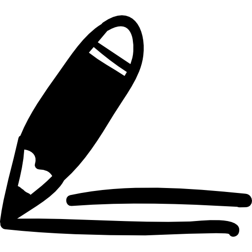
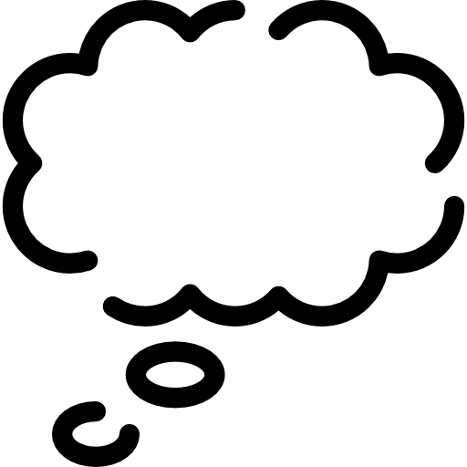

Técnica de gestión del tiempo. Divide el tiempo de estudio en intervalos de trabajo y descanso. Beneficios: Mejora la productividad y la concentración.
Organiza visualmente las ideas. Crea mapas mentales para conectar ideas clave. Ideal para entender conceptos. Beneficios: Facilita el aprendizaje significativo.

Reforzamiento a largo plazo. Revisa la información en intervalos regulares en lugar de memorizar todo de una vez. Beneficios: Mejora la retención a largo plazo.

Aprende haciendo. Pon a prueba tu conocimiento respondiendo preguntas o resolviendo problemas. Beneficios: Profundiza la comprensión y fortalece la memoria.

Aprender explicando. Intenta explicar el tema como si se lo enseñaras a alguien más. Beneficios: Identifica lagunas en tu comprensión y fortalece el aprendizaje.

Notas efectivas. Toma notas de manera estructurada. Facilita el repaso y la comprensión de los temas. Beneficios: Mejora la organización y la claridad al estudiar.